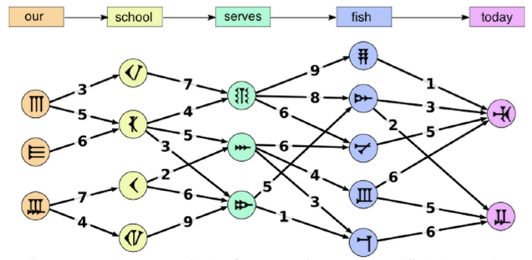

ビ太郎は英語の文章を古代語に翻訳しようとしています。１つの単語は１つの古代語の記号に置き換えられます。１つの単語から置き換えられる記号の候補は1種類だけとは限りません。ビ太郎は最も良い翻訳をしたいと考えています。
ビ太郎は英単語の下に記号の候補を書いていきました。記号と記号の間には，それらが続けて使えるかどうかと，どれくらい適しているか（点数が高いほど適しています）を書きました。
ビ太郎は翻訳のために「our school serves fish today（今日の給食は魚です）」という文章を用意しました。最も良い翻訳は，5個の記号の間の4つの点数の合計がいちばん大きいものになるはずです。

5つの単語それぞれの下に並んでいる記号の中から1つずつ選び，選んだ5つの記号の間の4つの点数の合計をなるべく大きくします。
選んだ5つの記号の間の4つの点数の合計の最大値を入力して下さい。